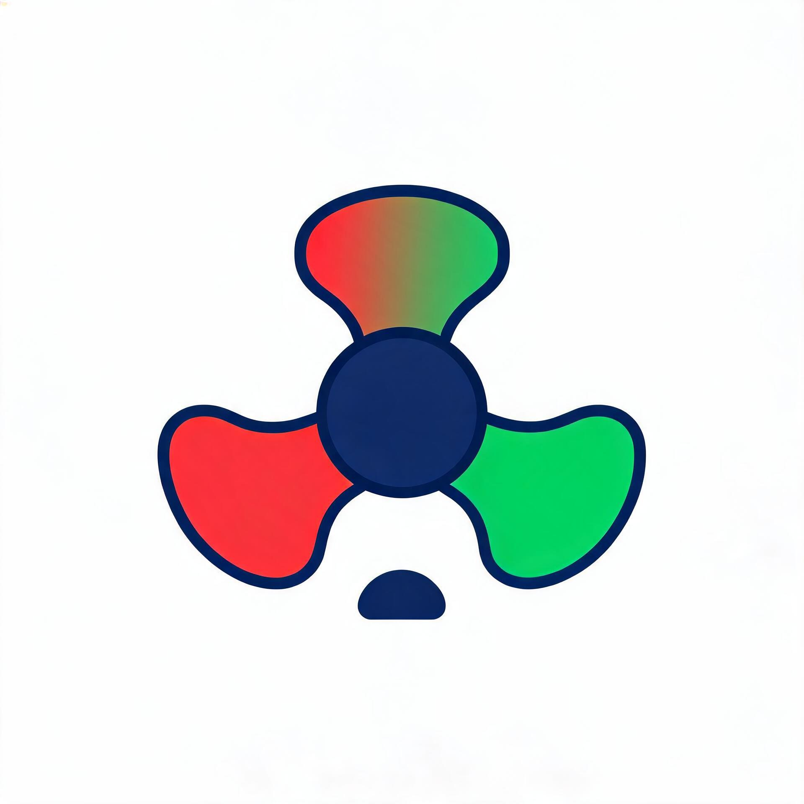

{{ w.cycle_signal }}
{% set pure_code = w.stock_code|replace('SH','')|replace('SZ','')|replace('BJ','') %} {% if platform == 'guba' %} 📋 查看股吧讨论 → {% else %} 🌐 查看雪球讨论 → {% endif %}
点击个股展开历史趋势图，再次点击折叠
当日无自选股数据。
{{ insight.analysis }}